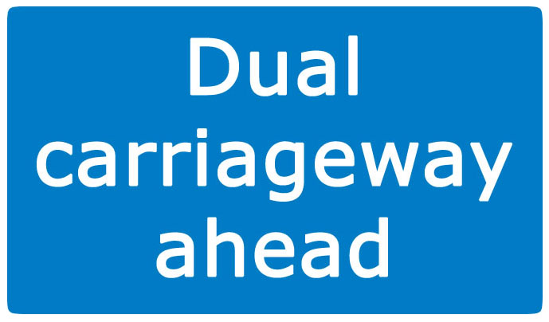
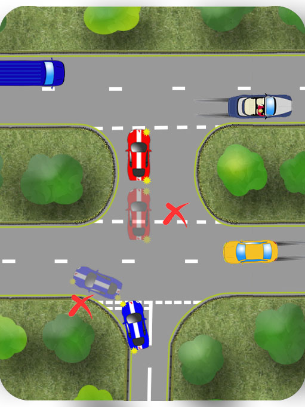
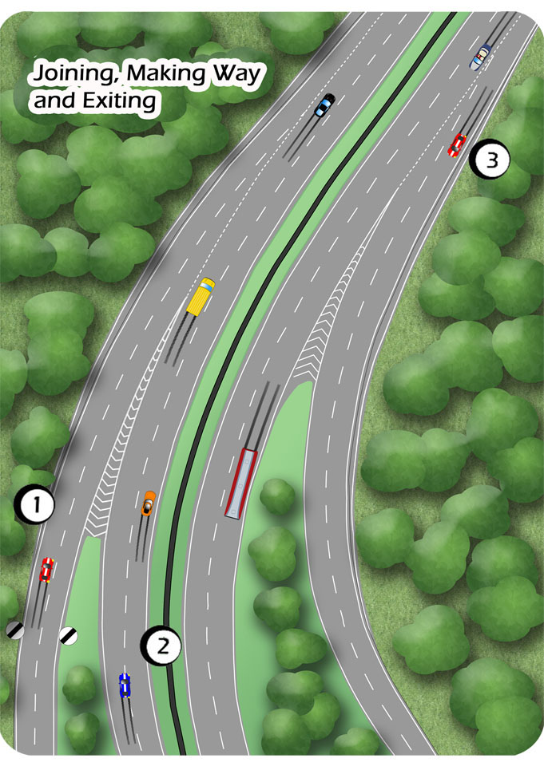

A dual carriageway is a road where oncoming flows of traffic are divided by a solid divider be it a grass verge a raised kerb or a barrier.
Speed limits often vary along dual carriageways. Where national speed limits apply, it is 70mph.
At higher speeds adjust to the appropriate stopping distance. Use the two second rule to check.
Signs to warn you of exits, side roads and roundabouts are clear and early. Respond to these in good time especially when travelling at speed.
Keep to the left lane unless turning off or overtaking.
Unlike motorways, slower moving vehicles like tractors and cyclists can use dual carriageways. Pass them with plenty of space by planning your lane change early.
Turning Right Onto A Dual Carriageway
Assess whether the central reservation is large enough to accommodate the length of your vehicle. If so, you can cross the carriageway in two stages.
If the reservation isn’t deep enough to accommodate your vehicle, you must wait until the carriageway is clear in both directions making sure that traffic doesn’t have to change speed or direction as you emerge.

Turning Left Onto A Dual Carriageway
Turn left as you normally do from a T-junction but beware of faster moving traffic and allow a larger gap. Keep a keen eye for fast moving motorbikes which are harder to see due to their smaller profile. If there are two or more lanes, you can use the left one if it’s clear but be extremely careful of traffic in the next lane as you emerge, especially on faster roads. In the illustration, the yellow car is changing lanes as the blue one emerges.
Slip Roads
Slip roads allow you to merge with and exit main roads, usually without stopping or slowing too much. They are common features of motorways and dual carriageways.

1.Joining
Try to use the left lane of the slip road as this lane is longer and allows you more time to merge. Avoid driving alongside another vehicle on the slip road.
Signal right.
Build your speed so you’re matching that of the traffic on the dual carriageway.
Use your mirrors and glance to your right to look for a space. A quick, sideways glance is sufficient to see into the area not covered by the mirrors. This is not the deep blind spot check you make before setting off. Return your attention ahead quickly as things can change quite suddenly, especially at speed and in busy traffic.
Use your gas on or off so that you merge smoothly into a space.
In the unlikely event that you’re not allowed a comfortable space to merge into, hold back until you are.
Stay in the left lane of the carriageway until you’re used to the new speed.
2.Making Way
Allow a gap for traffic joining the carriageway by accelerating or slowing gently.
Consider changing lanes to make way for traffic which is merging.
3.Exiting
Start signalling to exit around the 300 yards marker if there is one.
Slip roads are often long. Where possible, maintain speed on the main carriageway and slow down once on the slip road.
Look out for the end of the dual carriageway, where two way traffic applies.